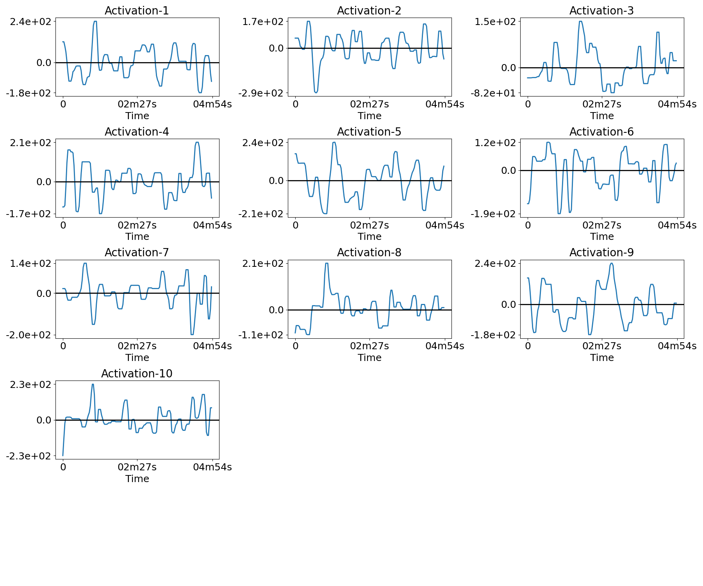
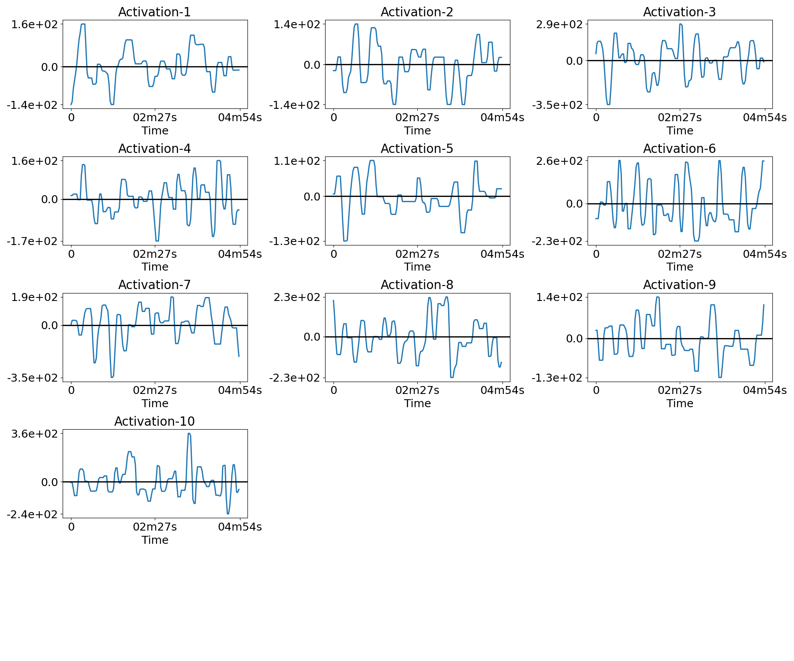
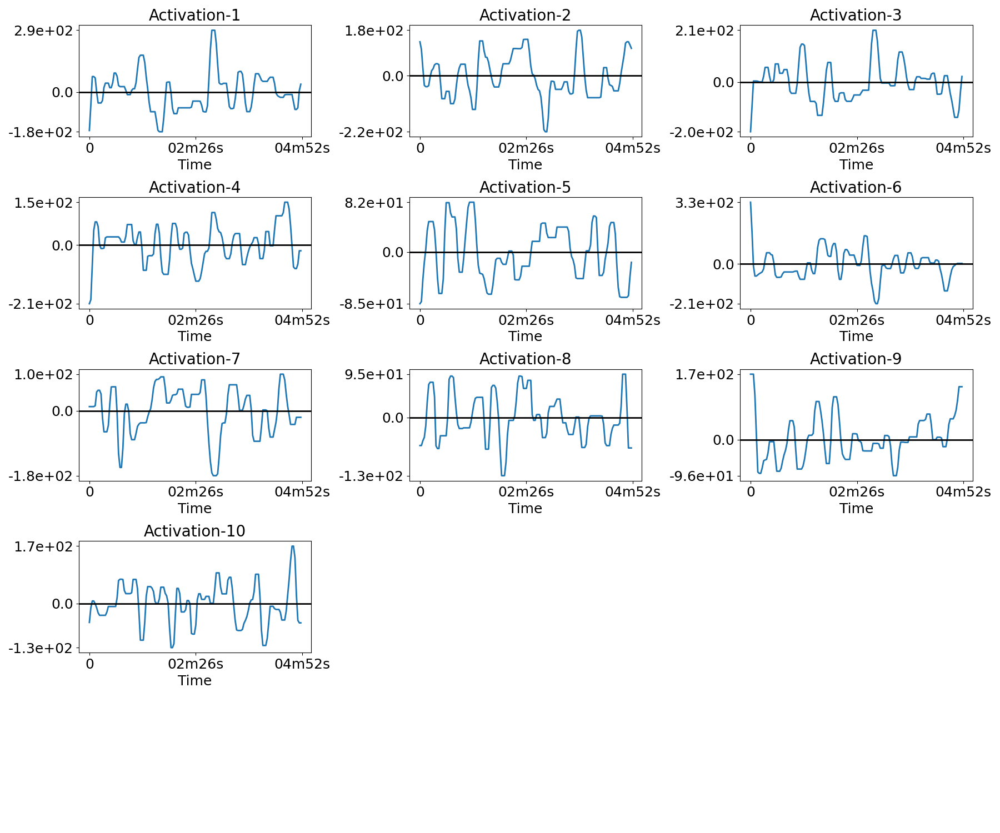
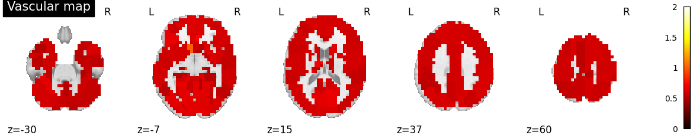

Note
Click here to download the full example code
Real fMRI data example¶
Example to recover the different neural temporal activities, the associated functional networks maps and the HRFs per ROIs in the fMRI data, on the ADHD dataset resting-state.
plot_dir = 'plots'
if not os.path.exists(plot_dir):
os.makedirs(plot_dir)
seed = 0
TR = 2.0
n_subjects = 4
adhd_dataset = datasets.fetch_adhd(n_subjects=n_subjects)
func_fnames = adhd_dataset.func[:n_subjects]
confound_fnames = adhd_dataset.confounds[:n_subjects]
Out:
/home/hcherkaoui/.local/lib/python3.6/site-packages/nilearn/datasets/func.py:439: VisibleDeprecationWarning: Reading unicode strings without specifying the encoding argument is deprecated. Set the encoding, use None for the system default.
dtype=None)
slrda = SLRDA(n_atoms=10, t_r=TR, n_times_atom=20, lbda=0.75, max_iter=30,
eps=1.0e-3, shared_spatial_maps=True, random_state=seed,
verbose=2)
t0 = time.time()
slrda.fit(func_fnames, confound_fnames)
delta_t = time.strftime("%H h %M min %S s", time.gmtime(time.time() - t0))
print(f"Fitting done in {delta_t}")
Out:
[SLRDA] Preprocessing subject '/home/hcherkaoui/nilearn_data/adhd/data/0010042/0010042_rest_tshift_RPI_voreg_mni.nii.gz'
[SLRDA] Preprocessing subject '/home/hcherkaoui/nilearn_data/adhd/data/0010064/0010064_rest_tshift_RPI_voreg_mni.nii.gz'
[SLRDA] Preprocessing subject '/home/hcherkaoui/nilearn_data/adhd/data/0010128/0010128_rest_tshift_RPI_voreg_mni.nii.gz'
[SLRDA] Preprocessing subject '/home/hcherkaoui/nilearn_data/adhd/data/0021019/0021019_rest_tshift_RPI_voreg_mni.nii.gz'
[SLRDA] Running 1 fit(s) on 4 subject(s) in series
Fitting done in 00 h 00 min 00 s
if slrda.shared_spatial_maps or n_subjects == 1:
filename = os.path.join(plot_dir, f'spatial_maps.png')
plot_spatial_maps(slrda.u_hat_img, filename=filename,
perc_voxels_to_retain='10%', verbose=True)
else:
for n in range(n_subjects):
filename = os.path.join(plot_dir, f'spatial_maps_{n}.png')
plot_spatial_maps(slrda.u_hat_img[n], filename=filename,
perc_voxels_to_retain='10%', verbose=True)
Out:
Saving plot under 'plots/spatial_maps.png'
if n_subjects == 1:
filename = os.path.join(plot_dir, f'activations.png')
plot_temporal_activations(slrda.z_hat, TR, filename=filename, verbose=True)
else:
for n in range(n_subjects):
filename = os.path.join(plot_dir, f'activations_{n}.png')
plot_temporal_activations(slrda.z_hat[n], TR, filename=filename,
verbose=True)

- 
- 
- 
Out:
Saving plot under 'plots/activations_0.png'
Saving plot under 'plots/activations_1.png'
Saving plot under 'plots/activations_2.png'
Saving plot under 'plots/activations_3.png'
Plot vascular maps
if n_subjects == 1:
filename = os.path.join(plot_dir, f'vascular_maps.png')
plot_vascular_map(slrda.a_hat_img, display_mode='z',
cut_coords=np.linspace(-30, 60, 5),
filename=filename, verbose=True)
else:
for n in range(n_subjects):
filename = os.path.join(plot_dir, f'vascular_maps_{n}.png')
plot_vascular_map(slrda.a_hat_img[n], display_mode='z',
cut_coords=np.linspace(-30, 60, 5),
filename=filename, verbose=True)

- 

Out:
Saving plot under 'plots/vascular_maps_0.png'
Saving plot under 'plots/vascular_maps_1.png'
Saving plot under 'plots/vascular_maps_2.png'
Saving plot under 'plots/vascular_maps_3.png'
delta_t = time.gmtime(time.time() - t0_total)
delta_t = time.strftime("%H h %M min %S s", delta_t)
print(f"Script runs in {delta_t}")
Out:
Script runs in 00 h 00 min 18 s
Total running time of the script: ( 0 minutes 18.781 seconds)